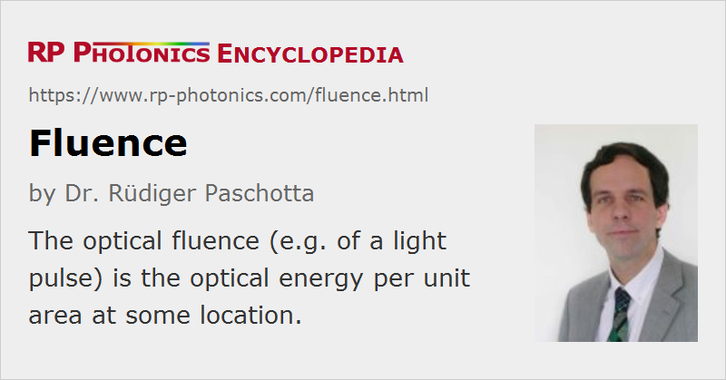

Fluence
Definition: optical energy per unit area
German: Fluenz
Formula symbol: F
Units: J/m2, J/cm2
How to cite the article; suggest additional literature
Author: Dr. Rüdiger Paschotta
In general physics, the fluence is defined as the time-integrated flux of some radiation or particle stream. Specifically in optics, the fluence F e.g. of a laser pulse is the optical energy delivered per unit area. Its most common units are J / cm2 (joules per square centimeter).
In the same way as an optical intensity, the fluence is a position-dependent value. For a laser beam, the fluence is often highest on the beam axis and lower at positions somewhat away from that axis. For continuous-wave beams, the term fluence is meaningful only in combination with some irradiation time.
In some cases, one is interested in the peak fluence, which is the highest fluence value occurring within the laser beam profile. For a Gaussian beam, the peak fluence is the total optical energy divided by π w2 / 2, where w is the Gaussian beam radius.
From the time-dependent optical intensity, one can obtain the fluence by temporal integration over the full pulse duration.
Common Uses of Fluence Values
If an intense short or ultrashort pulse saturates the gain e.g. of a laser crystal or active fiber, the pulse duration is often far below the upper-state lifetime. The local degree of saturation then depends only on the pulse fluence, and not on the temporal distribution of the intensity. An important property of any gain medium is its saturation fluence.
For slow saturable absorbers, essentially the same remarks apply as for gain media.
In the context of laser-induced damage by laser pulses, one often specifies the damage threshold of a material as a fluence. This does not mean, however, that the damage threshold is independent of the pulse duration; usually, the critical fluence value rises for increasing pulse durations.
Questions and Comments from Users
Here you can submit questions and comments. As far as they get accepted by the author, they will appear above this paragraph together with the author’s answer. The author will decide on acceptance based on certain criteria. Essentially, the issue must be of sufficiently broad interest.
Please do not enter personal data here; we would otherwise delete it soon. (See also our privacy declaration.) If you wish to receive personal feedback or consultancy from the author, please contact him e.g. via e-mail.
By submitting the information, you give your consent to the potential publication of your inputs on our website according to our rules. (If you later retract your consent, we will delete those inputs.) As your inputs are first reviewed by the author, they may be published with some delay.
See also: optical intensity, gain saturation, gain media, saturable absorbers, laser-induced damage
and other articles in the category general optics
|  |
If you like this page, please share the link with your friends and colleagues, e.g. via social media:
These sharing buttons are implemented in a privacy-friendly way!